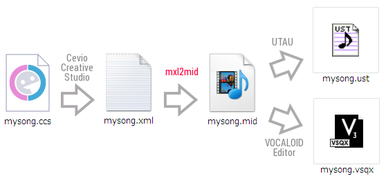

Mxl2mid
MusicXML to MIDI converter
Tweet

choose your MusicXML file
Convert to MIDI
This program supports only MusicXML file that was output from CeVIO Creative Studio.
Created by
oov
| Powered by
GopherJS
| Please use a
modern browser
| Please listen to
my song